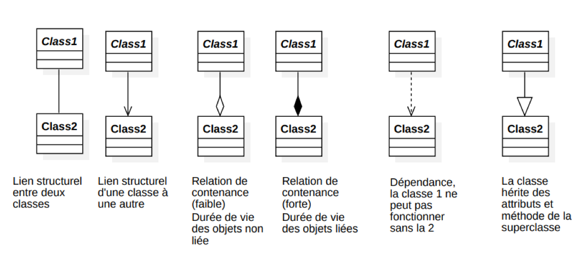

Besoin d'aide pour comprendre?
UML pour l’analyse et la conception
UML sert à décrire un système avant (et pendant) le code : ce que fait le système (cas d’utilisation), comment les données sont structurées (classes) et comment les objets collaborent au cours du temps (séquences).
Diagrammes de cas d’utilisation
Un diagramme de cas d’utilisation montre les interactions entre le système étudié et son environnement (personnes, autres systèmes, matériels) sous forme d’« acteurs » qui utilisent des « cas d’utilisation ».
Éléments principaux
- Le système : encadré qui représente la frontière de l’application (ce qui est dedans/ dehors).
- Acteurs : rôles externes (utilisateur, service distant, matériel) qui interagissent avec le système.
- Cas d’utilisation : fonctionnalités visibles depuis l’extérieur (scénarios d’usage).
- Associations : liens entre acteurs et cas d’utilisation (qui fait quoi, et avec combien d’instances via les multiplicités).
Relations entre cas d’utilisation
- « include » : un cas d’utilisation réutilise systématiquement un autre (comportement commun obligatoire).
- « extend » : un cas d’utilisation en étend un autre dans certaines conditions (comportement optionnel, déclenché par une condition).
- Généralisation (héritage d’acteur ou de cas d’utilisation) : un acteur/cas spécialisé hérite du comportement du général et ajoute des cas spécifiques.
Bonnes pratiques
- Nommer les cas d’utilisation en langage métier (« Gérer les réservations », pas « clicBouton1 »).
- Rester au niveau fonctionnel (ce que voit l’utilisateur, pas les classes ni l’UI détaillée).
- Ne pas surcharger le diagramme : utiliser plusieurs diagrammes si nécessaire.
Diagrammes de classes : bases
Un diagramme de classes décrit les types d’objets manipulés par le système, leurs attributs, leurs méthodes et les liens structurels qui les relient.
Classe, attributs, opérations
- Classe : boîte avec 3 parties (nom, attributs, opérations).
- Attributs : données portées par la classe (nom : type, éventuelle valeur par défaut).
- Opérations : services offerts par la classe (nom(paramètres) : type de retour).
- Visibilité :
+: public-: private#: protected
Associations & multiplicités
Une association représente un lien structurel durable entre deux classes (ex : un Client passe des Commande).
Les multiplicités précisent combien d’objets de chaque côté peuvent être liés (0..1, 1, 0..*, 1..*, etc.).
- Nom de rôle : clarifie le sens de l’association (ex :
client,commandes). - Multiplicité : exprime les cardinalités (ex : un client peut avoir 0 à N commandes).
- Navigabilité : flèche si on précise dans quel sens le code connaît l’autre classe.
Associations avancées : agrégation, composition, héritage, dépendance
Héritage (généralisation)
L’héritage relie une classe plus générale (super-classe) à une classe plus spécifique (sous-classe). La sous-classe hérite des attributs et opérations de la super-classe, et peut en ajouter ou les redéfinir.
Agrégation & composition
- Agrégation (losange blanc) : relation « tout / partie » faible. La partie peut survivre sans le tout (ex : une
Équipeagrège desJoueur, qui peuvent exister sans l’équipe). - Composition (losange noir) : relation « tout / partie » forte. La durée de vie de la partie dépend du tout (ex : une
Commandecompose desLigneCommandequi n’existent pas seules).
Dépendances
Une dépendance (flèche pointillée) exprime qu’une classe utilise une autre de façon ponctuelle (paramètre, variable locale…) sans en faire un lien structurel durable.
Diagrammes de séquence
Un diagramme de séquence montre comment des objets collaborent au cours du temps pour réaliser un scénario, via l’envoi de messages.
Éléments essentiels
- Lifelines : lignes verticales représentant les instances (objets, acteurs) impliquées.
- Messages : flèches horizontales (appel de méthode, retour, signal asynchrone).
- Barres d’activation : zones pendant lesquelles l’objet est en train d’exécuter une opération.
Fragments combinés
Les fragments combinés permettent d’exprimer des structures de contrôle : alternative (alt), option (opt),
boucle (loop), interruption (break…), chacun avec une condition (garde).
- alt : plusieurs branches exclusives (if / else).
- opt : exécution facultative (if sans else).
- loop : répétition tant que la condition est vraie.
- break : sortie anticipée d’un scénario courant.
Faire le lien UML ⇄ Java
- Une classe UML ⇄ une classe Java (attributs, méthodes, visibilité).
- Une association ⇄ un attribut qui référence une autre classe, ou une collection d’objets.
- Un cas d’utilisation ⇄ un ensemble de scénarios possibles, qu’on retrouve ensuite en séquences + code des contrôleurs / services.
- Un diagramme de séquence ⇄ un enchaînement d’appels de méthodes entre objets au run-time.

Sources
- Sparx Systems — UML 2 Use Case Diagram
- uml-diagrams.org — Use case actors & associations
- Creately — Use case diagram relationships
- Visual Paradigm — Association, aggregation, composition
- GeeksforGeeks — UML Class Diagrams
- Wikipedia — Class diagram
- Sparx Systems — UML 2 Sequence Diagram
- Visual Paradigm — Sequence diagrams & fragments
- uml-diagrams.org — Combined fragments